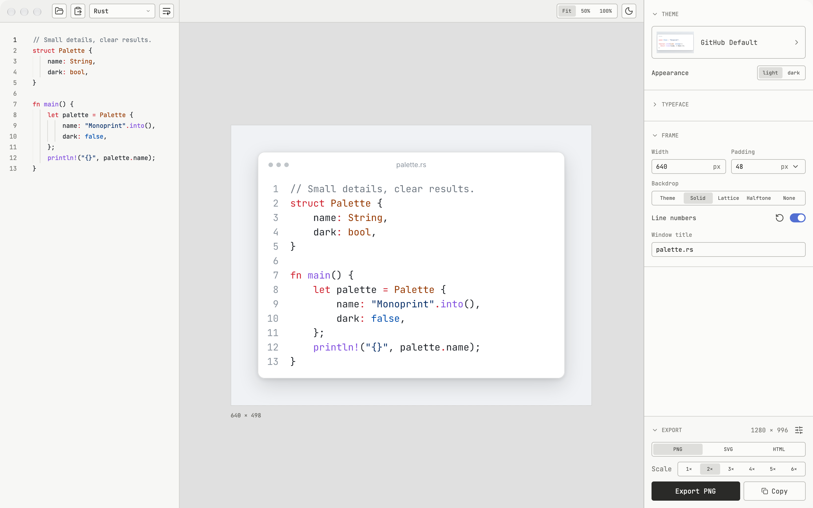

PNG · SVG · HTML
Code, ready
to share.
Choose a theme. Frame your snippet.
Keep the details that matter.
A native macOS studio, an offline command line, and Rust and TypeScript APIs. One renderer, wherever you work.
Release in preparation · 0.1.0
Try it from source
54 presets. 96 appearances.
Paired light and dark palettes, ten bundled typefaces, separate comment fonts and coding ligatures.
Keep it local.
Rendering runs on your machine. Fonts, syntax grammars and emoji fallbacks travel with it.
Pick the format.
PNG for sharing. Outlined SVG for scaling. Standalone HTML for selectable source.
A place to frame your code.
Native macOS · Apple Silicon

Fits your workflow.
Export a file from your terminal, render a batch in Rust, or use the same renderer from a Node application.
No browser to launch.
No font installation.
cargo build --locked --release
./target/release/monoprint main.rs \
--theme gruvbox-medium --padding 32 \
--scale 2 -o code.pngBuild from source with Rust 1.97+ and a C compiler. Prebuilt downloads are in preparation.
Prepared platforms
- Studio
- macOS 12+ · Apple Silicon
- CLI
- macOS arm64 · Linux x86-64
- Node.js 22+
- macOS arm64/x64 · Linux glibc arm64/x64 · Windows x64
Release builds and signed downloads still need qualification. Rust uses a source dependency while registry packaging is being prepared.